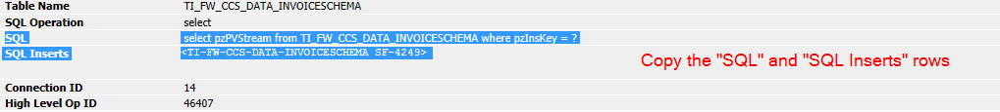

Rebuild PRPC SQL statements |
| Example: |

Start from and include the "SQL" label when selecting the text to copy. Include also the "SQL Inserts" and
following parameters.Paste the text in the following text area and do not break the pasted text with new lines. SQL and SQL Inserts can be also copied from the log files, be sure the whole SQL statement stays in a its own single row, without any line break. Be sure also that the whole SQL Inserts stay in a single row without any line break. |
|
| Tracer output: |
History |
|
|
Copy the SQL and SQL Inserts rows from the tracer as in the example, paste them in the "Tracer output" text area and click on |
||
|
Result: |
||
| Statement: | ||
| Values: | ||
|
Tested with Chrome, IE 11 and Firefox |